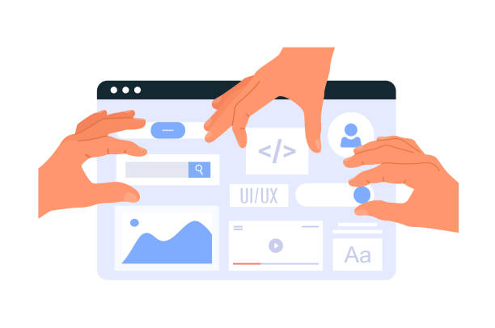

1. Web 1.0 (Read-Only) - 1990-an
Karakteristik:
- Web generasi pertama, bersifat statis.
- Pengguna hanya bisa membaca informasi, tidak dapat berinteraksi secara langsung
- Konten diunggah oleh administrator, hampir tidak ada kolaborasi pengguna
- Tampilan sederhana, menggunakan HTML dasar, sedikit gambar, tanpa animasi dinamis.
- Tidak ada algoritma pencarian yang canggih, lebih seperti direktori (misalnya Yahoo Directory).
Web 2.0 (Read-Write) - 2004-sekarang
Karakteristik:
- Website menjadi interaktif dan user-generated content (konten dibuat oleh pengguna).
- Muncul media sosial, blog, forum, dan platform berbagi video.
- Pengguna dapat berpartisipasi, mengomentari, mengunggah konten, dan berkolaborasi.
- Teknologi: AJAX, JavaScript, XML, CSS3, API.
- Aplikasi berbasis cloud mulai berkembang.
Contoh:
- Facebook, Twitter (X), Instagram.
- YouTube, Wikipedia, WordPress.
- E-commerce seperti Tokopedia, Shopee.
3. Web 3.0 (Semantic Web) - 2010-sekarang
karakteristik:
- Web yang lebih pintar dan personalisasi, didukung AI, Big Data, dan Machine Learning.
- Data terhubung dan dapat dipahami oleh mesin (semantic web).
- Desentralisasi menjadi konsep penting (Blockchain, DApps).
- Fokus pada keamanan data, privasi, dan interkoneksi antar platform.
- Muncul teknologi kripto, NFT, Metaverse
Contoh:
- Aplikasi berbasis blockchain (Ethereum, OpenSea).
- ChatGPT, Siri, Google Assistant (pemrosesan data cerdas).
- Google Search yang semakin pintar, memprediksi kebutuhan pengguna.
4. Web 4.0 (Intelligent Web) - Masih konsep tahap awal
Karakteristik:
- Web yang sepenuhnya terintegrasi dengan AI, bersifat pervasive/ubiquitous (ada di mana-mana).
- Human–Machine Interaction sangat lancar (internet berinteraksi langsung dengan pikiran atau perasaan
manusia).
- Menerapkan IoT (Internet of Things), komputasi kuantum, Augmented Reality (AR) dan Virtual Reality (VR).
- Web berfungsi seperti asisten pribadi yang cerdas, mampu mengambil keputusan otomatis.
- Prediksi kebutuhan pengguna bahkan sebelum diminta (predictive AI).
Contoh:
- Smart City berbasis AI yang terkoneksi penuh.
- Asisten virtual yang memahami emosi manusia dan berinteraksi secara alami.
- Web terhubung langsung dengan perangkat otak-komputer (Brain-Computer Interface).

30 July, 2025
My Web